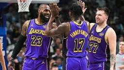
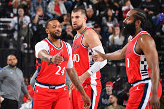
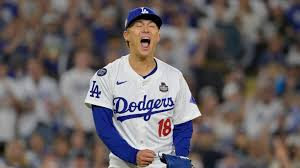

Desporto
O desporto é uma parte fundamental da vida em Los Angeles. A cidade abriga algumas das equipas mais populares dos Estados Unidos, atraindo fãs de todas as partes do mundo.
Los Angeles Lakers
Os Lakers são uma das equipas mais lendárias da NBA, com base em Los Angeles, Califórnia. Fundados em 1947 (originalmente em Minneapolis), mudaram-se para Los Angeles em 1960. Já ganharam vários campeonatos, com eras míticas como a de Magic Johnson, Kareem Abdul-Jabbar, Kobe Bryant & Shaquille O’Neal. Hoje, a equipa vive uma nova fase de transição, com talentos recentes a emergir.
As figuras mais centrais atualmente são LeBron James, que segue como líder em experiência, e Luka Dončić, recentemente contratado e já apontado como grande estrela ofensiva. Outros jogadores importantes incluem Austin Reaves, Rui Hachimura e Jaxson Hayes.
Los Angeles Clippers
Os Clippers partilham a cidade com os Lakers e, nos últimos anos, têm ganho cada vez mais espaço no basquetebol norte-americano. São conhecidos pela garra e pela busca de um título inédito.
Neste momento, as estrelas dos Clippers incluem Kawhi Leonard, que, quando saudável, é uma figura de excelência defensiva e ofensiva. Também Bradley Beal, trazido para reforçar o ataque, e John Collins, que ajuda no interior, são jogadores frequentemente destacados.
Los Angeles Dodgers
No basebol, os Dodgers são uma das equipas mais respeitadas e vitoriosas dos Estados Unidos. Com uma história rica, representam Los Angeles ao mais alto nível.
As grandes estrelas dos Dodgers na temporada 2025 são Shohei Ohtani, um jogador que brilha tanto a bater como a lançar, Freddie Freeman, conhecido pela consistência ofensiva, e Will Smith, catcher muito valorizado. Outros nomes muito destacados são Yoshinobu Yamamoto e Clayton Kershaw, este último veterano com grande história no clube.